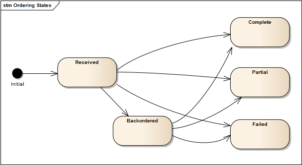

Ordering Numbers Advanced
Overview
- Overview of Ordering
- Creating an Order
- New Number Order Request Format
- New Number Order Response Format
- Backordering Numbers
- Updating a new-number order
Overview of Ordering
Orders placed with the Bandwidth Dashboard API are processed as a single-step activity when inventory is available to fulfill the request. The numbers will be searched for according to the indicated criteria, and, if found, will be activated in the network without intermediate confirmation with the requestor. Under most conditions, the time between the request for numbers, and the selection and activation of those numbers in the bandwidth network, happens in les than a second. There are cases in the ordering of numbers where the completion and activation of the telephone numbers in the network is not near-real-time, such as in the case where the numbers are backordered for later completion. These facts, coupled with the need to persist an order record beyond the activation period of the telephone numbers has motivated the use of an asynchronous model, where the response to the request is an interim response, and the final completion of the order happens at some later time.
In light of the fact that these interactions are handled in a machine-to-machine manner, coupled with the considerations of our asynchronous model, has motivated us to ensure that an order always has a state, and that state is always available via the API. The State Transition Diagram describing these states is below. Any attempt to query an order will indicate one of these states.

The meaning of the states is provided in the following table.
| State | Meaning |
|---|---|
Received |
A transitional state indicating that the order has been received by the system, and is in the process of being implemented. |
Complete |
All numbers in the request have been activated in the network. This is a final state. |
Partial |
Some of the numbers needed to fulfill the request have been activated in the network, and no more numbers will be activated as part of this order. This is a final state. See the <PartialAllowed> element described below. |
Failed |
None of the numbers needed to fulfill the request have been activated in the network, and no more numbers will be activated as part of this order. This is a final state. See the <PartialAllowed> element described below. |
Backordered |
The Bandwidth Phone Number Dashboard may have activated some of the requested numbers in the network, but it is continuing to find and activate more numbers. An order may remain in this state for a number of days. |
Creating an Order
The user can order numbers to their account using the HTTP POST Request Format method. This can be done either through a search for available numbers or by passing a description of the specific numbers to be ordered.
As in other asynchronous workflows, the request to order a new telephone number is created by a POST to a resource dedicated to the purpose to tracking new number requests – the accounts/{account-id}/orders resource
If the request is valid the Bandwidth Phone Number API will create an order resource, and will return an order ID which should be used in querying for the status for an order. Success will be indicated by a 201 Created return code, and will include a link to the Order resource in the Location header of the response.
New Number Order Request Format
All New Number orders are sent to the Bandwidth Dashboard as requests to create a new number order record. That new number order record is used to report the results of the order, as well as to track the status of the order if it remains open as a back-order for the numbers.
There are a number of different ways of ordering numbers using the Bandwidth Dashboard APIs, reflecting various approaches that can be used to search the available number inventory. In summary, the various types are:
Existing Number orders, used if the numbers are known to be available based on a prior search.
- Area Code / NPA search based orders
- NPA-XXX, and NPA-NXX-X search based orders
- Rate Center search based orders
- State, and City/State search based orders
- ZIP Code search based orders
- LATA search based orders
- Toll free number orders
These different order types have different parameters that guide the ordering process, and thus have different parameters as part of their order requests.
The order requests are communicated via a POST API call with a payload that describes the order parameters.
New Number Order Response Format
The network APIs return an XML payload in response to a request. In addition, an HTTP 201 location header message is returned for all requests. Sample is shown here:
HTTP/1.1 201 Created
Location: https://dashboard.bandwidth.com/api/accounts/{accountId}/orders/{orderId}
The Location header represents the URL that can be fetched representing the current status of a new number order.
Backordering Numbers
If not all of the requested telephone numbers are available at the time that the order is placed, the order can optionally be placed in a “Backordered” state, for subsequent completion by the Bandwidth Phone Number API. The order will remain in this state until the order is filled, or until the order is closed.
An order will be a candidate for backordering if the <BackOrderRequested> element is included in the request payload, with a value of “true”.
New Number Order States
Orders placed for new numbers usually complete rapidly, returning either all, some or none of the numbers requested, based on the availability of numbers in the Bandwidth available inventory. The final disposition of the order is reflected in the <OrderStatus> element:
| Status | Description |
|---|---|
FAILED |
No telephone numbers available |
PARTIAL |
Some but not all of the requested telephone numbers were available and provided |
COMPLETED |
All of the requested telephone numbers were provided |
If a new number order has been tagged to indicate that telephone numbers are to be backordered and the indicated quantity is not immediately available, then the order will remain active, and the interim status of BACKORDERED will be indicated in the <OrderStatus> element when the order is examined with a GET referencing the order-id.
Requesting a backorder via the API .
If the API call has the <BackOrderRequested> element set to true, then the order will be retained by the Bandwidth Phone Number Dashboard until it can be filled or until it is closed via an API call or GUI status update.
The <BackOrderRequested> element and the < PartialAllowed> element interact in the completion of the order. The interaction is described in the following table:
| Condition | Backorder Requested | Partial Allowed | Outcome |
|---|---|---|---|
| Requested number of Telephone Numbers is found | n/a | n/a | User gets their TNs |
| Less than the requested quantity is found | true |
true |
Available TNs are ordered and the Order is placed into Backordered status for subsequent fulfillment and notification |
| Less than the requested quantity is found | true |
false |
The order is placed into Backordered status for subsequent fulfillment and notification, which will occur only on 100% availability. No numbers will be allocated to the order until the full request can be completely satisfied. |
| Less than the requested quantity is found | false |
true |
Available TNs are ordered, and the order is completed and transitioned to the terminal "PARTIAL" state indicating that the order was partially filled |
| Less than the requested quantity is found | false |
false |
Order Fails. Not enough numbers are available. |
| None Found | see above | see above | Same as for "Less Than", except that the entire order goes into BackOrder status immediately |
Usage Recommendations:
Although there are no restrictions on the order-types for which backorder requests can be submitted via the API, it is recommended to avoid submitting backorders for zipcode, npanxx and npanxxx order types, largely because of the difficulty of filling requests of those types if the inventory is not immediately available.
In the case of npanxx and npanxxx order types, the specific dial plan elements are often no longer available, and in the case of zipcode orders there are cases where the relationship between zipcode and dial plan is not represented in the available data.
Updating a new-number order
With the introduction of Backorder capabilities, new number orders may stay in backordered state for a period while the order is filled. While in this state it is possible to update the modifiable fields in the record, as well as to request that backorder processing of the order be ended.
Those updates to incomplete orders are facilitated by a PUT on the order-id.
Closing a backordered order retains any telephone numbers that have already been assigned to the account, and the order will typically convert its status to PARTIAL state, indicating that some requested numbers were not provided. If no numbers were provided the final state will be FAILED.